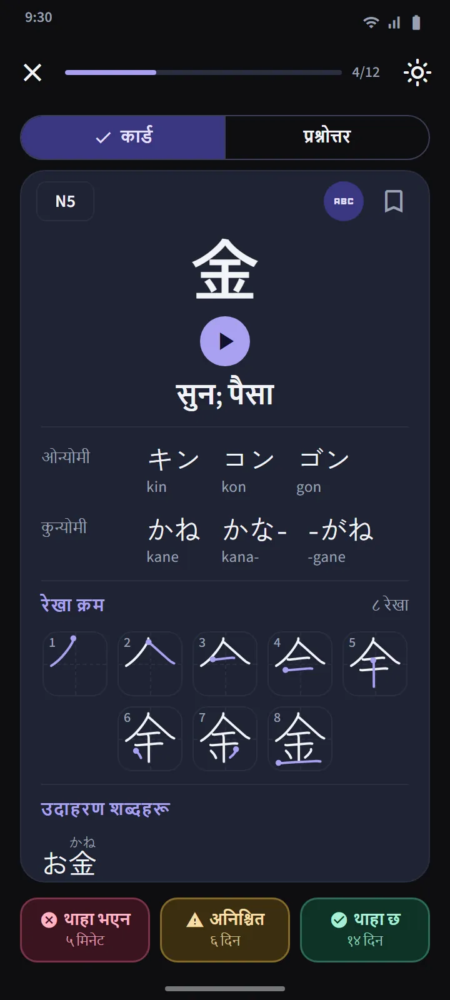
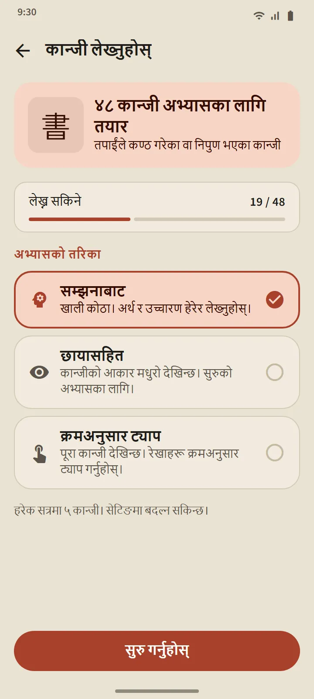

जापानी विद्यालयको क्रममा 25 कान्जीका सेट
कान्जी ट्याब JLPT तहअनुसार बाँडिएको छ, त्यसपछि करिब 25 कान्जीका सेटमा। एउटा तहभित्र क्रम जापानी विद्यालयको पाठ्यक्रम (कक्षा 1 पहिला) र त्यसपछि कम स्ट्रोकदेखि बढ्दो क्रममा हुन्छ; सँगै पर्ने शृङ्खला, जस्तै सङ्ख्या, हप्ताका दिनका नाम र ऋतु, क्रममै राखिन्छन्। हरेक सेटको पङ्क्तिमा यसका कान्जी, प्रगति पट्टी, थाहा भएका र निपुण भएकाको सङ्ख्या, र “क्विज तयार” चिह्न वा म्याद आएको सङ्ख्या देखिन्छ।
| तह | कान्जी | पहुँच |
|---|---|---|
| N5 | १०३ | निःशुल्क |
| N4 | १८१ | निःशुल्क |
| N3 | ३७० | Premium |
| N2 | ३६९ | Premium |
| N1 | १,२०७ | Premium |


कान्जी कार्ड र प्रश्नोत्तर
कार्डको अगाडि कान्जी मात्र हुन्छ। पछाडि: अर्थ, On र Kun पठन (चाहनुभयो भने रोमाजीसहित), हरेक स्ट्रोकको एक फ्रेम र सुरु बिन्दु चिन्ह लगाइएको स्ट्रोक क्रमको चित्र, र त्यो कान्जी प्रयोग भएका उदाहरण शब्दहरू। शब्दावलीका कार्डकै तीन बटनले यसको तालिका मिलाउँछन्।
सेटको प्रश्नोत्तर 10 कान्जी थाहा भयो वा निपुण भएपछि खुल्छ, र तीन प्रकारका प्रश्न आउँछन्: कान्जीबाट अर्थ, अर्थबाट कान्जी, र कान्जीबाट पठन। निपुणको नियम उही हो: तीन फरक दिन प्रश्नोत्तरमा सही। ट्याबको माथिको कान्जी पुनरावलोकनले हरेक सेटका म्याद आएका सबै कान्जी एकै ठाउँमा ल्याउँछ, र मिश्रित क्विजले सेटहरूबीच जाँच्छ।


कान्जीको विवरण र विशेष डेक
हरेक कान्जीको विवरण पृष्ठमा यसका अर्थ, चरण र अर्को पुनरावलोकन, पठन, स्ट्रोकको चित्र र उदाहरण शब्द हुन्छन्; शब्दको विवरण पृष्ठले यसका कान्जीमा लिङ्क गर्छ। शब्दावलीजस्तै कान्जीमा पनि बुकमार्क गरिएको, कठिन कान्जी र 60 सेकेन्डको द्रुत अभ्यास डेक छन्, र गृह स्क्रिनको छिटो अभ्यास खण्डको एउटा स्विचले यसका चारवटा खानालाई कान्जी संस्करणमा बदल्छ।


औँलाले कान्जी लेख्नुहोस्
तपाईंलाई थाहा भयो वा निपुण भएका कान्जी लेखेर अभ्यास गर्न सकिन्छ: अर्थ र पठन मात्र देखाइन्छ, तपाईं स्ट्रोक-स्ट्रोक लेख्नुहुन्छ, र हरेक स्ट्रोकको आकार, दिशा र क्रम अफलाइनै जाँचिन्छ। तीन मोड: सम्झनाबाट, छायासहित, र क्रमअनुसार ट्याप। कान्जी दुई फरक दिन सहायताबिना सम्झनाबाट लेखेपछि “लेख्न सकिने” गनिन्छ।


डेटाका स्रोत
अर्थ र पठन KANJIDIC (Electronic Dictionary Research and Development Group) बाट र स्ट्रोक क्रम KanjiVG बाट आएका हुन्, दुवै CC BY-SA इजाजतपत्रअन्तर्गत। कान्जीका तह पुरानो JLPT सूचीमा आधारित अनुमान हुन्; हालको JLPT ले आधिकारिक कान्जी सूची प्रकाशित गर्दैन।